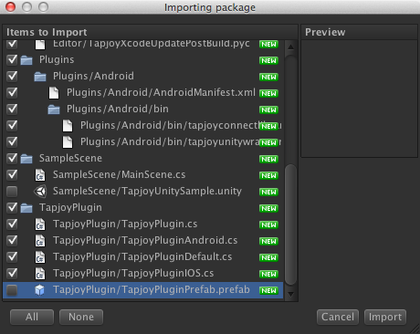
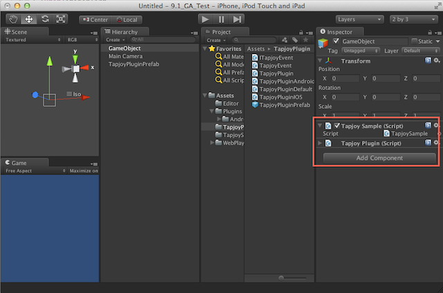

Last updated about 1 month ago
Unity Plugin
If you are a publishers who want to monetize with Tapjoy using our Unity plugin you can show all our different ad units in your Unity project. Note: If you're an advertiser seeking distribution follow these instructions, but the only function you need to implement is RequestTapjoyConnect call.
You can download the Unity Plugin for iOS and Android here:
Unity 3.5 and 4.0 - 4.3 are supported. (SDK Build: Unity 9.1.1)
The Tapjoy Unity Plugin zip contains a Unity package file for easy importing, and the raw files for those who prefer to drag-n-drop files for their Tapjoy upgrade.
To import the TapjoyUnityPlugin_vVERSION.unitypackage:
- Open your Unity project
- Assets -> Import Package -> Custom Package...
- Point to the TapjoyUnityPlugin_vVERSION.unitypackage file
- IMPORTANT, if using Unity 3.5: Uncheck TapjoyPlugin/TapjoyPluginPrefab.prefab
- Review the list of import files checking for any conflicts
- Press the "Import" button to accept the files
To run this sample in Unity 3.5:
- File->New Project
- Assets->Import Package->Custom Package
- Point to the TapjoyUnityPlugin_vVERSION.unitypackage file
- IMPORTANT: Uncheck TapjoyPlugin/TapjoyPluginPrefab.prefab and SampleScene/TapjoySampleScene.unity
- Game Object->Create Empty
- Drag TapjoySample.cs & TapjoyPlugin.cs to Inspector window
- Open the "Build Settings" window: File -> Build Settings
- Switch your platform to iOS or Android, and click the "Player Settings..." button
- Set the "Bundle Identifier" to com.tapjoy.tapjoyPlugin
To run this sample in Unity 4.0:
- Open Assets/TapjoySample/TapjoySampleScene.unity
- Remove the TapjoyPluginPrefab from the Hierarchy.
- Go to Game Object->Create Empty
- Drag TapjoySample.cs & TapjoyPlugin.cs to Inspector window
- Open the "Build Settings" window: File -> Build Settings
- Switch your platform to iOS or Android, and click the "Player Settings..." button
- Set the "Bundle Identifier" to com.tapjoy.tapjoyPlugin
- Build.
Additionally for iOS:
- In the "Player Settings..." set the "Target iOS Version" to at least 4.3
NOTE: In order for the PostprocessBuildPlayer script to run after building for iOS, you will need:
- python 2.7 or higher
- perl
Additionally for Android:
NOTE: In order to run this sample project on Android, you will need to either:
- If you don't have an /Assets/Plugins/Android/AndroidManifest.xml file: Re-name the TapjoySampleAndroidManifest.xml file to AndroidManifest.xml located in the /Assets/Plugins/Android/ folder
- If you already have an /Assets/Plugins/Android/AndroidManifest.xml file: Edit your AndroidManifest.xml to include the activities and permissions as listed in the /Assets/Plugins/Android/TapjoySampleAndroidManifest.xml file, under the <!-- Tapjoy --> comment.
If the TapjoyPluginPrefab is red (missing a link to it's script):
- Highlight the TapjoyPluginPrefab object, and ensure you can see the "TapjoyPlugin (Script)" section in the Inspector
- Drag the /Assets/TapjoyPlugin/TapjoyPlugin.cs file from your Project navigator to the script section you found above
- The object should now be correctly linked

- For Unity 9.0.4 SDK integrations: If you can't remove all_load in your project you can set "-force_load path_to/TapjoyPublisherLibrary.a" instead. If you use the -force_load flag you must also remove TapjoyPublisherLibrary.a from "Build Phases"->"Link Binary With Libraries". If you fail to remove it from "Link Binary With Libraries" your app may crash
Change Log/Known Issues:
- 08.22.13: Adding -all_load and/or -ObjC linker flags in Unity SDK 9.1 will cause duplicate symbol compiler errors. Fix scheduled in production.
Unity 4.3:
If you are using Unity 4.3 you'll need to make the following changes to the Manifest file to get display ads working:
- Delete the non-native activity ("com.unity3d.player.UnityPlayerActivity”) from your AndroidManifest.xml file
- Delete he proxy activity (“com.unity3d.player.UnityPlayerProxyActivity”) from your AndroidManifest.xml file
- Move
<intent-filter>
<action android:name="android.intent.action.MAIN" />
<category android:name="android.intent.category.LAUNCHER" />
</intent-filter>
to the native activity (com.unity3d.player.UnityPlayerNativeActivity)
Upon building for iOS, Unity will automatically call the /Editor/PostprocessBuildPlayer script. This will in-turn loop through and execute all available PostprocessBuildPlayer_* scripts. The PostprocessBuildPlayer_Tapjoy script will call the TapjoyXcodeUpdatePostBuild.pyc, which will automatically import the following frameworks into your Unity-iPhone.xcodeproj:
CFNetwork
CoreGraphics
CoreLocation
CoreMotion
CoreTelephony
EvenKitUI
EventKit
Foundation
libsqlite3.0
libxml2
libz
MapKit
MediaPlayer
MessageUI
MobileCoreServices
QuartzCore
Social (Optional)
StoreKit
SystemConfiguration
UIKit
For Unity 9.0.4 SDK integrations: set the additional -ObjC linker and -all_load flags.
This allows you to build and run your iOS projects, without needing to stop and change any settings for Tapjoy integration. The TapjoyXcodeUpdatePostBuild.log will be available in your project folder to look at the results of the update to your xcode project.
The Unity plugin currently supports Android 2.3 - 4.3 devices.
NOTE: For users of earlier Tapjoy Unity Plugins - The starting Activity no longer needs to be overwritten (or have Tapjoy code added) and compiled into a jar in the Assets/Plugins/Android/bin/ folder. This is all handled automatically in Tapjoy SDK 9.x. If you are upgrading from an earlier version, your current starting Activity should still continue to work correctly with the plugin.
To avoid DEX errors, before upgrading you should delete all previous Tapjoy files/folders:
- /Assets/Plugins/Android/src/
- /Assets/Plugins/bin/classes/
- /Assets/Plugins/bin/TapjoyPlugin.jar
- /Assets/TapjoyPlugin/
You will need:
- Unity 3.1+ - http://unity3d.com/unity/download/
- JDK 6 (java 1.6.x) THERE ARE ISSUES WITH JDK 7, DO NOT USE THIS.
- Android SDK - http://developer.android.com/sdk/index.html
- ANT Java build tool - http://ant.apache.org/ to build on this example. If you want to recompile the native library (libjni.so) you will need the Android NDK as well.
To add Tapjoy to your Unity Android project, follow these steps:
- Override AndroidManifest.xml. Create this file in the Assets/Plugins/Android folder. You need to specify the package name of your application. This must match your Unity Bundle Identifier. See Assets/Plugins/Android/AndroidManifest.xml for all the Tapjoy parameters which must be added into manifest.
- In Unity, change the Bundle Identifier to match your new package name.
- In your Unity project, you must have a GameObject linked in order to receive Tapjoy notifications. You can do in Unity by GameObject > Create Empty. Drag your script file onto the GameObject to link the two. The name of the GameObject must be set with SetCallbackHandler() before any other Tapjoy methods are called.
- Now your project should be ready to use the TapjoyPlugin.
Unity 4.3:
If you are using Unity 4.3 you'll need to make the following changes to the Manifest file to get display ads working:
- Delete the non-native activity ("com.unity3d.player.UnityPlayerActivity”) from your AndroidManifest.xml file
- Delete he proxy activity (“com.unity3d.player.UnityPlayerProxyActivity”) from your AndroidManifest.xml file
- Move
<intent-filter>
<action android:name="android.intent.action.MAIN" />
<category android:name="android.intent.category.LAUNCHER" />
</intent-filter>
to the native activity (com.unity3d.player.UnityPlayerNativeActivity)
// CONNECT
// Fired when RequestTapjoyConnect succeeds
public static event Action connectCallSucceeded;
// Fired when RequestTapjoyConnect fails
public static event Action connectCallFailed;
// VIRTUAL CURRENCY
// Fired when GetTapPoints responds with the users tap points (amount of currency in user account is returned)
public static event Action<int> getTapPointsSucceeded;
// Fired when GetTapPoints fails to get the users tap points
public static event Action getTapPointsFailed;
// Fired when SpendTapPoints succeeds and indicates that the user has successfully spent currency (amount of currency left after spending is returned)
public static event Action<int> spendTapPointsSucceeded;
// Fired when SpendTapPoints fails to spend the currency
public static event Action spendTapPointsFailed;
// Fired when AwardTapPoints succeeds and indicates that the user has successfully been awarded currency
public static event Action awardTapPointsSucceeded;
// Fired when AwardTapPoints fails to award the currency
public static event Action awardTapPointsFailed;
// Fired when the applications starts/resumes, and the user has earned currency in the interim, by completing offers (amount earned is returned)
public static event Action<int> tapPointsEarned;
// FULLSCREEN AD
// Fired when GetFullScreenAd finishes succesfully loading
public static event Action getFullScreenAdSucceeded;
// Fired when GetFullScreenAd fails loading
public static event Action getFullScreenAdFailed;
// DAILY REWARD
// Fired when GetDailyRewardAd finishes succesfully loading
public static event Action getDailyRewardAdSucceeded;
// Fired when GetDailyRewardAd fails loading
public static event Action getDailyRewardAdFailed;
// DISPLAY AD
// Fired when GetDisplayAd is received
public static event Action getDisplayAdSucceeded;
// Fired when GetDisplayAd fails
public static event Action getDisplayAdFailed;
// VIDEO AD
// Fired when a video ad begins playing
public static event Action videoAdStarted;
// Fired when a video ad has completed playing
public static event Action videoAdFailed;
// Fired when a video ad has completed playing
public static event Action videoAdCompleted;
// GENERAL
// Fired when any full screen view is closed
public static event Action<TapjoyViewType> viewClosed;
NOTE: The following callback methods are not required, and you should consider using the events as listed above.
Should you choose to continue using the callbacks, the need to be implemented in a GameObject in order to receive Tapjoy notifications. The name of the GameObject must be set with SetCallbackHandler() before any other Tapjoy methods are called. The Tapjoy library will trigger callback notifications when a certain action is completed, such as a successful completed Connect.
// Called when a Connect as completed successfully.
public void TapjoyConnectSuccess(string message)
// Called when a Connect as failed.
public void TapjoyConnectFail(string message)
// Called when Tap Points (Tapjoy managed currency) has been returned from the server.
public void TapPointsLoaded(string message)
// Called when the Tap Points request fails.
public void TapPointsLoadedError(string message)
// Called when the the spend Tap Points request has been returned from the server.
public void TapPointsSpent(string message)
// Called when spend Tap Points fails.
public void TapPointsSpendError(string message)
// Called when the award Tap Points request has been returned from the server.
public void TapPointsAwarded(string message)
// Called when award Tap Points fails.
public void TapPointsAwardError(string message)
// Called when Tapjoy managed currency has been awarded.
public void CurrencyEarned(string message)
// FULL SCREEN ADS
// Called when the full screen ad has been loaded from the server. TapjoyPlugin.ShowFullScreenAdFullScreen() should be called at this point.
public void FullScreenAdLoaded(string message)
// Called when the full screen ad request fails.
public void FullScreenAdError(string message)
// DAILY-REWARD ADS
// Called when the daily reward ad has been loaded from the server. TapjoyPlugin.ShowDailyRewardAd() should be called at this point.
public void DailyRewardAdLoaded(string message)
// Called when the daily reward ad request fails.
public void DailyRewardAdError(string message)
// DISPLAY ADS
// Called whenever the display ad has been loaded from the server. TapjoyPlugin.ShowDisplayAd() should be called at this point.
public void DisplayAdLoaded(string message)
// Called when the banner ad request fails.
public void DisplayAdError(string message)
// VIDEO
// Called when a video ads are ready (in the offer wall).
public void VideoAdStart(string message)
// Called when an error occurs while trying to play video.
public void VideoAdError(string message)
// Called when a video has completed playing.
public void VideoAdComplete(string message)
// CONNECT
public static void SetCallbackHandler(string handlerName) { }
public static void RequestTapjoyConnect(string appID, string secretKey) { }
public static void RequestTapjoyConnect(string appID, string secretKey, Dictionary<string, string> flags) { }
public static void EnableLogging(bool enable) { }
public static void ActionComplete(string actionID) { }
public static void SetUserID(string userID) { }
// OFFERS
public static void ShowOffers() { }
// VIRTUAL CURRENCY
public static void GetTapPoints() { }
public static void SpendTapPoints(int points) { }
public static void AwardTapPoints(int points) { }
public static int QueryTapPoints()
public static void ShowDefaultEarnedCurrencyAlert() { }
// DISPLAY ADS
public static void GetDisplayAd() { }
public static void ShowDisplayAd() { }
public static void HideDisplayAd() { }
public static void SetDisplayAdSize(TapjoyDisplayAdSize size) { }
public static void EnableDisplayAdAutoRefresh(bool enable) { }
public static void MoveDisplayAd(int x, int y) { }
// iOS SETTING
public static void SetTransitionEffect(int transition) { }
// FULL SCREEN ADS
public static void GetFullScreenAd() { }
public static void ShowFullScreenAd() { }
// DAILY REWARD ADS
public static void GetDailyRewardAd() { }
public static void ShowDailyRewardAd() { }
// EVENT TRACKING
public static void SendShutDownEvent() { }
public static void SendIAPEvent(string name, float price, int quantity, string currencyCode) { }
// MULTIPLE CURRENCY (currency cannot be managed by Tapjoy)
public static void ShowOffersWithCurrencyID(string currencyID, bool selector) { }
public static void GetDisplayAdWithCurrencyID(string currencyID) { }
public static void GetFullScreenAdWithCurrencyID(string currencyID) { }
public static void SetCurrencyMultiplier(float multiplier) { }
public static void GetDailyRewardAdWithCurrencyID(string currencyID) { }